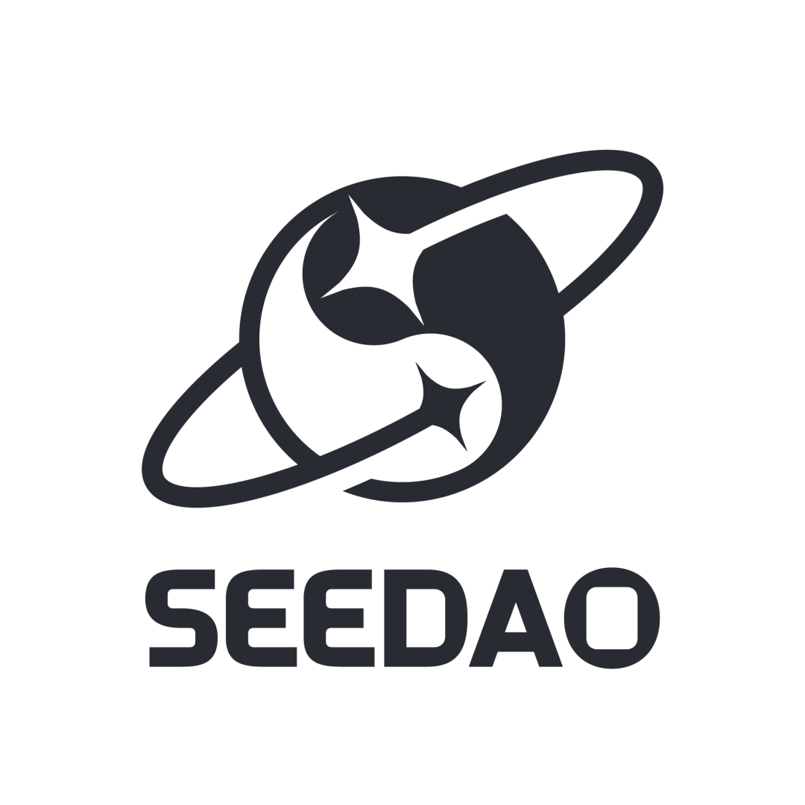

Introducing SeeDAO! We warmly invite you to join us in exploring life as a digital nomad in Bangkok. Our event features a diverse panel of guests who will share their valuable insights on various aspects of Web3.
As a digital polis connecting over one million Chinese individuals and beyond, SeeDAO embraces the principles of connectivity, fluidity, exchange, and freedom. In 2023, SeeDAO is launching the City Liaison Program to foster global physical connections and promote greater collaboration.
üïêDate
March 26th, 14:00-17:00
üìçLocation
FOMO BKK, 126/10 Park Avenue, Sukhumvit 63, Level 2, Khlong Tan Nuea, Watthana, Bangkok 10110
üìÖAgenda
13:30-14:00 Registration
14:00-14:20 Opening Session | Baiyu, SeeDAO Initiator [Introduction to SeeDAO: Paving the Way to the Digital City-State]
14:20-14:40 Guest Session #1 | Max, Founder of Port3 Network [Thailand: The Kingdom of Smile Scams]
14:40-15:00 Guest Session #2 | Thomas Yao @BeWater.xyz [How We Got Here in Open Source Way]
15:00-16:00 Panel Discussion | Navigating Life as a Digital Nomad in Bangkok
Moderator: Wei Duan, Next.ID Community Manager and Bangkok Newcomer Panelists: Baiyu, SeeDAO Initiator Thomas Yao, Open Source Advocate Max, Founder of Port3 Network Vince, Year 7 in Thailand and Master's Student at Chulalongkorn University